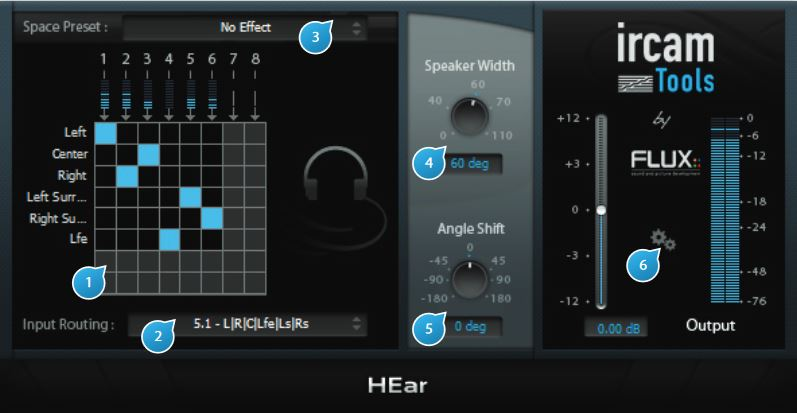

3 Controls
3.1 (1) Routing Matrix
The routing matrix gives an overview of the mapping between the plugin’s inputs from the DAW track to the virtual speaker internal outputs. The virtual speaker outputs are down-mixed to stereo using a virtual speaker processing algorithm.
Please take note that the plugin’s output to the DAW track itself is always stereo as the binaural processing is intended exclusively for use with headphones.
The meters above the fi rst row indicate the source levels of individual input channels.

User controls
3.2 (2) Speaker Mode
Specifies which virtual speaker configuration should be emulated. Available modes depend on the configuration of the track the plugin is inserted into, and comprise of one or more of the following:
- 5.0
- 5.1
- 7.1
- 8.0
3.3 (3) Space Preset
Selects between different spaces with subtly different colorations (Preset 1..3) or completely neutral (No Effect)
3.4 (4) Speaker Width
Controls the width between virtual speakers, expressed in degrees. The default is 60°, which corresponds to the recommended setting. This allows to narrow or broaden the stereo image.
3.5 (5) Angle Shift
Controls the angle between the listener and the centre of the virtual speakers. The default is 0°, which corresponds to the ideal listener position, giving a balanced image between channels.